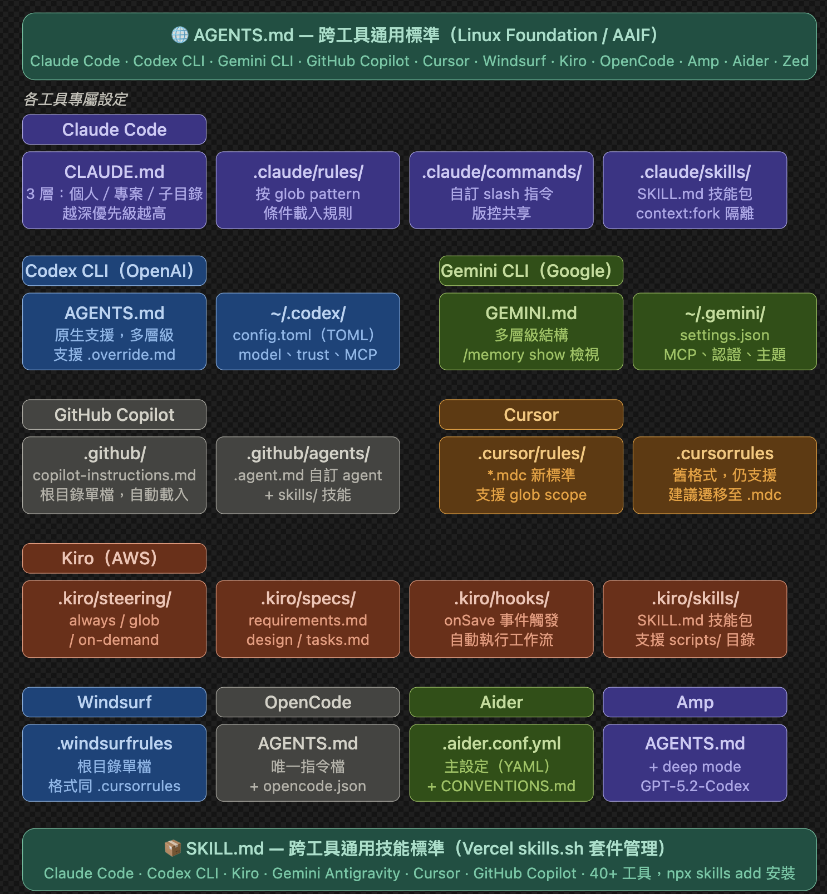

AI Coding 雜記
[toc]
Mitchell Hashimoto 的 AI 應用之旅
🧐 特別選擇翻譯這篇文章是因為這和我的歷程非常接近，深有同感。
Mitchell Hashimoto 是 HashiCorp 的前共同創辦人，這是間專注於雲端基礎架構自動化、安全性等的公司，產品包含 Terraform，Vault 等。Mitchell Hashimoto 現階段主要開發 Ghostty。
Mitchell Hashimoto 在使用適應任何有意義的工具時，必然會經歷 3 個階段。
- 效率低落時期
- 適應期
- 工作流程和具體改變人生的發現期
在多數的情況下，我必須強迫我自己經歷完成第一階段和第二階段，原因很簡單，因為我們通常已經有了自己滿意並順手的工作流程。導入新工具感覺像是在給自己找麻煩，說實話我並不想花這個力氣——但為了成為一個全面的專業人，我通常還是會硬著頭皮去做。
這是我如何發現 AI 工具的價值以及接下來想繼續嘗試什麼的心路歷程。在這充斥著誇大渲染、過度炒作的聲音之中，我希望這篇文章能呈現一個更細緻、更冷靜的視角——關於我對 AI 的看法，以及這些看法如何隨著時間一點一點地改變。
Mitchell Hashimoto：這篇部落格全部是我親筆撰寫。很不想這麼說，但考慮到文章的主題還是必須明確說明這點。
第一步：放棄 Chatbot
立刻停止透過 Chatbot（例如 ChatGPT、網頁版 Gemini 等）來處理實務上的工作。Chatbot 確實有其價值，也是我日常 AI 工作流的一部分，但它們在寫程式上的用處非常有限——你大多只能寄望它根據訓練資料碰巧給出正確答案，一旦答錯，就得由你反覆告訴它哪裡不對。這樣很沒效率。
我認為每個人接觸 AI 的第一個介面都是聊天視窗，想用 AI 寫程式時，第一個反應也是叫聊天介面直接幫你寫。
在我還是重度懷疑 AI 的時候，第一次「哇，這也太強了」的瞬間，是把 Zed 的指令面板截圖貼給 Gemini，請它用 SwiftUI 重現，結果它做得出乎意料地好，確實讓我傻眼。現在 Ghostty 在 macOS 上附帶的指令面板，和當年 Gemini 在幾秒內產出的版本相比，幾乎沒有什麼改動。
但當我試著把同樣的方法套用到其他任務上，也就是在既有舊專案下的結果令我大失所望。聊天介面三不五時就給出爛答案，一直忙著在介面和編輯器之間來回複製貼上程式碼和指令輸出。很明顯，這遠比我自己動手做還要沒效率。
想真正發揮 AI 的價值，你必須使用 Agent。Agent 是業界通用術語，指的是能夠對話、並在迴圈中呼叫外部行為的 LLM。¹ 最基本的條件是：Agent 必須具備讀取檔案、執行程式、以及發送 HTTP 請求的能力。
第二步：用 Agent 重現自己的工作
下一個階段，我試用了 Claude Code。直說吧：我一開始並不覺得驚艷。每次工作階段都拿不到好結果，它產出的東西幾乎全部都要我善後，花的時間還比自己直接做還多。我讀了部落格文章、看了教學影片，依然不覺得怎樣。
但我沒有放棄，而是強迫自己把每一個人工 commit 的成果，都用 Agent 重做一遍。我真的把每件事做了兩次：先自己完成，再跟 Agent 纏鬥，要它產出品質與功能都一樣的結果（當然不讓它看我的手動解法）。
這個過程痛苦至極，因為它完全妨礙我把事情做完。但過去我也用過太多不屬於 AI 的工具，明白摩擦期是正常的——沒有徹底試過，就沒有資格得出站得住腳的結論。
不過，硬實力就是這樣練出來的。我很快從第一性原理自行發現了別人早就在說的事，但因為是自己摸索出來的，理解反而更加深刻：
- 把每次工作階段拆成獨立、明確、可執行的小任務。不要試圖在一次超長的 session 中，跳過所有中間步驟直接追求完成品。
- 面對模糊的需求，先拆成「規劃 session」和「執行 session」分開進行。
- 如果你給 Agent 一個驗證自己工作成果的方法，它往往能自行修正錯誤、避免回歸 regression 也就是在修正過程中把其他原本正常的東西搞壞。
更廣泛地說，我也摸清了 Agent 擅長什麼、不擅長什麼，以及對於它擅長的任務，要怎麼做才能拿到我想要的結果。
這一切帶來了顯著的效率提升，到後來我開始自然而然地使用 Agent，感覺速度不比自己做慢——但也沒覺得更快，因為我大多數時間還是在「看顧」它。
有一點值得特別強調：效率提升有一部分，來自於搞清楚什麼時候不該用 Agent。把 Agent 用在它很可能失敗的事情上，顯然是在浪費時間；能夠判斷何時該迴避，本身就是一種節省時間的能力。
在這個階段，Agent 對我來說已經有足夠的價值，讓我樂意把它納入工作流，但我還是感覺不到整體效率有真正的淨成長。不過我也無所謂——能把 AI 當成一個順手的工具，已經夠了。
Agent 適合「任務清晰、可驗證、範圍有邊界」的工作；凡是這三個條件缺一，就要謹慎。
第三步：下班前跑 Agent
為了提升更多效率，我開始嘗試一個新模式：每天預留最後 30 分鐘，啟動一個或多個 Agent。我的假設是：反正那段時間我也沒辦法工作，如果 Agent 能趁機推進一些進度，或許就能多擠出一些效率。說白了就是：與其在有限的工作時間內想辦法多做，不如在本來就沒在工作的時間裡多做。
和前一個嘗試一樣，我一開始覺得這既沒什麼效果，又讓人煩躁。但我很快再次摸索出幾類真正有幫助的工作：
- 深度調研：叫 Agent 去調查某個領域，例如找出某個語言中符合特定授權類型的所有函式庫，並為每一個產出長篇摘要，涵蓋優缺點、開發活躍度、社群風向等等。
- 並行探索模糊想法：我有一些想法一直沒時間動手，就讓多個 Agent 平行去試。我並不期待它們能產出可以上線的東西，但或許能在我隔天著手時，幫我找到一些原本不知道自己不知道的盲點。
- Issue 與 PR 的分類整理：Agent 很擅長使用
gh（GitHub CLI），所以我寫了一個簡單的腳本，一次並行啟動多個 Agent 來分類整理 issue。我不允許它們直接回覆，我只要隔天早上能拿到一份報告，幫我判斷哪些任務高價值、哪些容易快速解決。
需要說明的是，我並沒有像有些人那樣讓 Agent 整晚跑個不停。大多數情況下，Agent 半小時內就完成任務了。只是工作日的後半段，我通常已經疲憊、無法進入心流，做事也沒什麼效率，所以把這段時間拿來啟動這些 Agent，反而讓我隔天早上能快速進入狀況。
也開始覺得——哪怕只是一點點——我產出的東西確實比用 AI 之前更多了。
第四步：把穩贏的球交出去
走到這一步，我對哪些任務適合 AI、哪些不適合，已經非常有把握。有些任務我幾乎可以確信 AI 會給出大致正確的解法，於是旅程的下一步就是：讓 Agent 去處理所有這類工作，我則同時去做其他事情。
具體來說，我每天一開始會先看前一晚分類 Agent 整理出的結果，手動篩選出那些 Agent 幾乎肯定能解決的 issue，然後讓它們在背景跑著（一次一個，不並行）。
與此同時，我做自己的事。不是在滑社群（也沒比沒有 AI 之前滑更多），不是在看影片，就是以我原本、正常、AI 出現前的深度思考模式，去處理我想做或必須做的事情。
這個階段有一點非常重要：關掉 Agent 的桌面通知。切換情境的代價極高。我發現，作為一個人，我的職責是主動決定什麼時候去打斷 Agent，而不是讓它反過來打斷我。不要讓 Agent 通知你。在自己工作自然出現間隔的時候，切過去看一眼，然後繼續。
值得一提的是，我認為「同時做其他事」這件事，有助於抵消Anthropic 研究所指出的問題（效率提升，但對於工作和學習的投入大量減少，阻礙新手的技能養成）。說白了是一種取捨：把某些任務委託給 Agent，但我們不需要在這些任務上繼續磨練技能和學習。你繼續手動處理的其他任務，技能仍在累積。
大量導入 AI 時，需刻意設計持續學習的機制。小心完全讓 AI 寫程式 → 最快完成，但幾乎沒學到東西。
走到這裡，我已經穩穩進入「再也回不去」的領域。我感覺效率更高了——但就算沒有，我最喜歡的一點是：我現在可以把寫程式和思考的心力，專注放在真正熱愛的任務上，同時那些我不喜歡的任務也依然能好好完成。
第五步：設計 Harness - 建構駕馭工程
下面可能是廢話：Agent 第一次就產出正確結果時效率最高，退而求其次，至少要是那種只需要微幅調整的結果。要達到這點，最穩妥的方法就是給 Agent 快速、高品質的工具，讓它能自動得知自己哪裡錯了。
我不確定業界是否已有通用術語，但我自己漸漸把這件事稱為「Harness Engineering」（駕馭工程）。核心概念是：每當你發現 Agent 犯了某個錯誤，就投入時間設計一個解法，讓它永遠不再犯同樣的錯。解決的核心問題就是如何確保 AI 輸出的可靠性、一致性、長期可維護性。
這件事有兩種形式：
- 更好的隱性提示（AGENTS.md）：針對比較簡單的問題，例如 Agent 一直執行錯誤的指令或用錯的 API，就去更新
AGENTS.md（或對應的設定檔）。這裡有一個來自 Ghostty 的實際範例。那個檔案裡的每一行，都對應著某個曾經出現過的錯誤 Agent 行為，而這些行幾乎把問題全解決了。 - 實際撰寫工具：例如，寫腳本來截圖、執行篩選後的測試等等。這通常會搭配 AGENTS.md 的更新，讓 Agent 知道這些工具的存在。
這就是我目前所在的階段。每當我看到 Agent 做了什麼蠢事，我都會認真想辦法讓它以後不再犯；反過來，每當 Agent 需要確認自己是否做對了，我也會認真想辦法讓它有能力自我驗證。
第六步：讓 Agent 持續運行
和第五步同時進行，我還有另一個目標：讓 Agent 隨時都在運作。如果沒有 Agent 在跑，我就會問自己：「現在有什麼事是 Agent 可以幫我做的？」
我特別喜歡搭配思考較慢、但更深入的模型來使用，例如 Amp 的深度模式（本質上就是 GPT-5.2-Codex），這類模型光是做小幅修改就可能耗時超過 30 分鐘。但換個角度看，它產出的成果往往相當優秀。
我目前沒有同時跑多個 Agent，近期也不打算這樣做。對我來說，只跑一個 Agent 是目前最理想的平衡點——既能做我喜歡的深度手動工作，又能兼顧看管這個有點笨、卻又神奇地頗有效率的機器人夥伴。
「讓 Agent 隨時運行」仍只是一個目標。就目前而言，我大概只有在正常工作日的 10% 到 20% 時間裡，真正做到有背景 Agent 在運作。不過我正在積極改善這一點。
我不想為了跑 Agent 而跑 Agent，只有在我認為某項任務真的能帶來幫助時，才會啟動它。這個目標的挑戰之一，在於改善我自己的工作流程與工具，讓我能持續產出高品質的任務來交派出去——這件事即使沒有 AI，本身也很重要！
AI 開發指引手冊
- 謹記 Agent 不對結果負責。人類依舊是結果的負責人。
- 生成的程式碼，請理解，不要提交不理解的程式碼。
- 過度依賴 AI 對結果做最後把關是不負責任的表現。
- 多「協作」，少「委派」。協作表示在理解的基礎上做決定，委派表示只關注最終結果。不要模仿老闆只提需求，不關注實作細節。
- 分解 PR，AI 很容易產生動輒上千行的程式碼，增加了 Review 難度，最終導致程式品質不可控，不可靠。可以使用「小步快跑」策略，限制一次性產出或者分解任務。
- 不要在真的理解需求之前就讓 AI 開始寫程式。「重複一次」確認自己是否真的理解。
- 別被 AI 帶著走，保持懷疑和獨立思考，通過反問方式實踐。
- 對於 AI 實作的程式碼請做好自動化測試和人工測試。拒絕未經測試的程式碼。
- 尤其對於 Junior，過度依賴 AI 會大幅降低學習效率。AI 非常擅長修正 Bug 但對於 Junior 不建議丟給 Agent 處理，建議使用聊天模式理解問題以及如何分析 Bug。
- 協助 AI 採用相依套件和函式庫，AI 傾向全部重造輪子。套件使用的經驗以及社群發展的方向，評價這些我們可以協助 AI。
1 | 請作為 Code Review 專家專精 Laravel。請將當前分支和 main/master 對比了解 diff 後，review 並產生報告，報告包含檔案，錯誤行數，原因和邏輯執行流程說明。 |
.claude/ 資料結構
下圖是目前各種 AI 工具如何使用這些 Agent 相關設定檔案。

這裡我們只專注 Claude Code。
大部分 Claude Code 使用者將 .claude/ 目錄視為一個黑盒子。大家都知道這個目錄的存在，也知道它在專案的根目錄。但大部分的人從未開啟，更不用說了解每個檔案的作用。
.claude 目錄是控制 Claude 在專案中的行為以及如何運作的控制中心，負責儲存您的指示，自訂的指令，權限規則，還有 Claude 各個 session 的記憶。一旦我們理解這個目錄我們可以更加精準的設定 Claude Code 的行為。
在深入了解之前，有一件事得先了解：實際上有兩個 .claude 目錄，而不是一個！一個在我們的專案下，第二個在我們的家目錄。專案層級的目錄保留團隊所需的設定，我們須加入版本控制，如此成員就可以使用相同的功能和規範。
全域的 ~/.claude/ 目錄儲存個人設定和本機狀態例如 session 紀錄和自動記憶的部分，因此在同一個專案，不同電腦 /resume 的時候會不同。Auto Memory（Claude 自動寫入的記憶，如建置指令、除錯偏好）也儲存於此。更精確的說：session 是本機且與啟動環境綁定的狀態。
CLAUDE.md
這是整個系統最重要的檔案。但我們開始 Claude Session 時，第一件事就是讀取 CLAUDE.md 它會將文字直接載入「系統提示」中並且在整個對話過程都會保留該文字。Anthropic 官方文件建議「keep it short and human-readable」（沒有查到具體幾個字元建議）。
2026 年 3 月 31 日，Anthropic 將 Claude Code v2.1.88 推送到 npm 遺漏的內容發現40,000 字元 ≈ 約 20,000 個中文字的限制。
Claude Code 讀取檔案有上限：每次最多 2000 行或 25000 token，超過就直接停止讀取，且不會通知你或 Claude。
簡單的說，Claude 會遵循在 CLAUDE.md 的內容。例如你表示永遠在實作之前撰寫測試，那麼它就會遵循。如果你說不要使用 console.log 來處理錯誤，使用自訂的 logger 它也會遵循。
在專案根目錄使用 CLAUDE.md 是很常見的設定，但你可以在家目錄也設定 ~/.claude/CLAUDE.md，如此全部的專案都會套用，甚至在專案下的子目錄也可以放置。 Claude 會讀取所有這些檔案並合併套用。
那麼具體來說 CLAUDE.md 應該寫什麼？
大部分的人不是寫太多，就是寫得太少。下面是一些有效的實作：
如何建置、測試、lint 等，例如你可以提供具體的指令說明
1
2
3
4
5## Commands
- Build: `npm run build`
- Test: `npm run test`
- Lint: `npm run lint`
- Type check: `npx tsc --noEmit`關鍵架構決策，具體範例：
1
2
3
4
5- 使用 Turborepo 管理 monorepo，packages/ 下的套件互相共用
- 不要直接跑 npm，一律用 turbo run build
- frontend/ 是 Next.js，backend/ 是 FastAPI，透過 REST 溝通
- 全域狀態只用 Zustand，不要引入 Redux 或 Context API
- 所有 DB 操作必須透過 /lib/db.ts，不要在元件裡直接呼叫表面上看不出來、但 Claude 很容易踩到的雷，通常是你們專案特有的設定或限制
1
2
3
4- NEXT_PUBLIC_ 前綴才能在前端存取，忘記加會 undefined 但不會報錯
- 裝新的 npm 套件，需先問過(須通過資安，可維護的評估)
- Next.js 使用 App Router，不要用 pages/ 的寫法
- Server Component 不能用 useState，Claude 容易混淆import 慣例、命名規則、錯誤處理風格。Claude 在寫新程式碼時要遵守的風格規則，避免他用自己的習慣寫出不一致的程式碼
1
2
3
4
5- API 錯誤統一用 /lib/errors.ts 的 AppError class
- 不要直接 throw string，一律 throw new AppError(...)
- 元件檔案：PascalCase（UserCard.tsx）
- 工具函式檔案：camelCase（formatDate.ts）
- 常數：UPPER_SNAKE_CASE（MAX_RETRY_COUNT）主要模組的檔案與資料夾結構。目標是讓 Claude 知道去哪裡找什麼，不需要完整 mapping，只需要關鍵目錄的用途說明。完整 tree 反而有害，專案結構會變動，CLAUDE.md 很快過時佔用大量行數但 Claude 實際用到的很少。Claude 自己會用工具讀取目錄結構，不需要預先餵給他。
⚠️ 避免在 CLAUDE.md
- 直接給設定檔。
- 長篇解釋理論。
- 加入已經可以用連結指向的完整文件。
再次強調盡量保持 CLAUDE.md 維持在 200 行以內 ，Boris Cherny（Claude Code 作者）本人用 60–80 行，具體為 40000 字元以下。
CLAUDE.local.md 個人覆蓋設定
有時候你有些偏好只適用於你自己，而不是整個團隊。例如你偏好使用不同的測試執行器，或是希望 Claude 用特定的模式開啟檔案。
在專案根目錄建立 CLAUDE.local.md。Claude 會連同主要的 CLAUDE.md 一起讀取，記得要加入 .gitignore。
優先順序的話：CLAUDE.local.md > <project>/CLAUDE.md > ~/.claude/CLAUDE.md 。
rules/ 可擴展的模組化指令
CLAUDE.md 對於單一的個人專案來說基本很足夠了。但如果是團隊且有一定規模的話，基本上每個人都想加入規則，很快我們就會得到一個超出限制，沒人特別關注和維護的 CLAUDE.md ，更糟糕的是資訊過期且龐大影響 Context。rules 的目的就是解決這個問題。
.claude/rules 目錄下的每個 md 檔案會跟著 .CLAUDE.md 一起自動載入。
1 | .claude/rules/ |
每個檔案有各自的關注點，可以更專注還有方便更新。例如開發 API 的成員只需要關注 api-conventions.md ，且真正強大的地方在「路徑限定規則」在檔案上面使用 YAML frontmatter ，該檔案就只會在 Claude 處理符合條件的檔案時才啟動。
1 | --- |
舉例來說，現在 Claude 在處理 React 前端元件的時候就不會載入上面範例，只有處理 API 相關路徑的檔案的時候才載入使用。沒有路徑欄位的規則會在每次會話中無條件載入。
這就是當你的 CLAUDE.md 開始變大的時候的正確解法。
hooks/ 確定性控制 Claude 行為
CLAUDE.md 已經很好用了，但它們只是建議。Claude 大多時候會遵守，但並不會保證。你無法保證語言模型不執行危險的指令！
Hook 的作用就是讓這些行為變得可控，有確定性。Hook 是使用者定義的 shell 命令，在 Claude Code 生命週期的特定時間點執行。它們提供對 Claude Code 行為的確定性控制，確保某些操作始終發生，而不是依賴 LLM 選擇執行它們，例如 PreToolUse 在呼叫執行工具前觸發事件。
全部 Hook 的設定在 .claude/settings.json ，Claude Code 在 session 開始時會快照設定，當事件觸發時透過 stdin 接收 JSON payload，並用 exit code 決定接下來發生什麼。
最關鍵的一點：只有 exit code 2 會阻斷執行。 Exit 0 代表成功。Exit 1 代表錯誤但不阻斷。Exit 2 代表停止一切，並將你的 stderr 傳給 Claude 讓它自我修正。
其中最常見的錯誤是把 exit 1 用在安全性 hook 上，它只會記錄錯誤，然後什麼都不做。
1 | .claude/ |
我們最常使用的事件如下：
PreToolUse在任何工具執行之前-
PostToolUse在工具執行成功後 StopClaude 完成時給品質把關UserPromptSubmit使用者提出 prompt 可以檢查 promptNotification桌面通知，SessionStart和SessionEnd在 Context 注入以及清除時
關於工具事件，matcher 正規表達式可以縮小哪些工具會觸發 Hook。"Write|Edit|MultiEdit" 針對檔案變更，"Bash" 針對 shell 指令，省略則匹配所有工具。
Write|Edit|MultiEdit是正則表達式，匹配的是 Claude 使用的工具名稱，這三個工具都是「寫入/修改檔案」的操作。另外可以參考官方工具列表。

下面是一個自動格式化的範例設定
1 | { |
PostToolUse 在 Claude 寫入或編輯檔案之後觸發，使用 jq 從 stdin 的 JSON payload 取得修改的檔案路徑，然後把入境給 prettier 直接格式化。2>/dev/null把錯誤訊息丟掉。
PreToolUse 的 bash-firewall.sh 腳本則是會從 stdin 讀取指令，針對危險的指令做檢查例如 rm -rf 、git push --force 和 DROP TABLE 等。在這裡定義哪些指令被允許、哪些用 exit 2 阻斷。
Stop 為在 npm test 失敗時使用 exit 2 退出，防止 Claude 直接認為任務成功，直到測試完全通過。
有一個值得特別注意的地方，一定要檢查 Claude 傳來的訊息中的 stop_hook_active 。沒有它，hook 阻斷 Claude、Claude 重試、hook 再次阻斷，就會造成無限迴圈。讓 Claude 在第二次嘗試時能夠停止。
1 | #!/bin/bash |
1 | 第一次 Stop 觸發 |
為了方便理解，下面提供一個簡單 echo 的範例，方便您驗證實作：
1 | { |
Hooks 在 session 進行中不會自動重新載入。
PostToolUse 無法撤銷任何操作，因為工具已經跑完了—— 如果需要阻止某個動作，用 PreToolUse
更多 Hook 的細節可以參考官方的教學。
skills/ 重複使用的工作流程
Skill 是 Claude 觀察對話根據上下文在任務符合的時候可以自行調用的工作流程。
其目錄結構大略如下：
1 | .claude/skills/ |
SKILL.md 使用 YAML frontmatter 描述何時採用。
1 |
|
當我們說「Code Review 並進行安全性檢查」的時候 Claude 會讀取描述，識別是否符合，然後調用技能。當然我們可以使用 /security-review 直接呼叫。
/skills 和 /commands 主要的差異在於 Skill 可以和支援的檔案一起打包，例如內容指向某個檔案。指令是單一檔案，Skill 是套件，通常包含較複雜的知識。
agents/專門的子代理
當一個任務複雜到需要一個專職的專家協助時，我們可以在 .claude/agents/ 定義子代理角色（subagent），每個代理（agent）其實是一個 markdown 檔案包含特定的系統提示詞、工具存取權限和模型偏好。
1 | .claude/agents/ |
下面是 code-reviewer.md 的範例：
1 | --- |
當 Claude 需要審查程式碼時，會獨立一個 context window 建立該 agent。agent 完成工作後壓縮結果回報。我們的主 session 不會被上千個 token 塞滿。
tools 欄位可以限制 agent 能做的事情。程式碼審查只需要 Read、Grep、Glob，它不需要寫入檔案。
model 欄位讓我們對於特定任務可以選擇更加合適、便宜的模型。例如 Haiku 能有效處理大多數唯讀的探索任務。把 Sonnet 和 Opus 留給真正需要的任務。
Haiku 適合唯讀、分類、摘要、格式轉換、探索、搜尋。
Sonnet 多數任務預設選擇，檔案修改等。
Opus 複雜的架構設計、深度推理邏輯的 debug、協調 Agent
個人 agent 放在 ~/.claude/agents/，跨所有專案可用。
settings.json 權限和專案設定
.claude/ 目錄裡的 settings.json 控制 Claude 被允許和不被允許做的事。同時也是我們 Hook 、可執行工具、可讀取哪些檔案等等設定的地方。
1 | .claude/settings.json |
一個設定範例如下：
1 | { |
首先 $schema 這行設定讓 VS Code 或 Cursor 可以自動補齊和驗證。建議使用。allow 陣列中包含的指令讓 Claude 不需要詢問就可能執行。對大部分的專案來說 Bash(npm run *) 或 Bash(make *) 可以讓 Claude 執行或編譯我們的專案。Bash(git *) 可以使用 git 指令。Read，Write，Edit，Glob，Grep 則是針對檔案操作。
deny 包含的是禁止的指令，常見例如 Bash(rm -rf)。
其他不在這些列表的指令，Claude 在執行前會詢問。這個中間地帶是刻意設計的，讓你有一層安全網，而不需要事先預想每一個可能的指令。
settings.local.json 個人偏好設定
這個檔案類似於 CLAUDE.local.md ，針對不需要提交到專案版本控制或個人偏好的設定。
全域 ~/.claude
通常我們不會操作這個目錄，但了解其中的內容還是很有幫助。
~/.claude/CLAUDE.md 會載入到每一個 Claude Code session，跨越所有專案。適合放你的個人編碼原則、偏好的風格，或任何你希望 Claude 記住的事，不管你在哪個專案都適用。
~/.claude/projects/ 儲存每個專案的 session 逐字稿和自動記憶。Claude Code 在工作時會自動把筆記存給自己：它發現的指令、觀察到的模式、架構上的洞察。這些內容會跨 session 保留。你可以用 /memory 瀏覽和編輯它們。
~/.claude/commands/ 和 ~/.claude/skills/ 存放跨專案可用的個人指令和 Skill。
一般來說你不需要手動管理這些。但知道它們的存在很有用——當 Claude 似乎「記得」某件你從來沒告訴過它的事，或是當你想清除某個專案的自動記憶重新開始時。
全部的東西組合在一起如下：
1 | your-project/ |
實作入門
如果您才剛開始使用 Claude Code 下面是一個建議的順序：
- 執行
/init，它會讀取專案建立初始的CLAUDE.md - 建立
.claude/settings.json設定合適的指令，正式工作上建議拒絕讀取.env - 如果發現某個工作很常重複可以開始建立指令
- 隨著
CLAUDE.md越來越大，嘗試使用.claude/rules/拆分檔案，根據團隊成員任務進行分類。 - 慢慢的可以補充自己的偏好，設定
~/.claude/CLAUDE.md
這樣就足以應付 95% 的專案了。Skill 和 agent 是在你有值得打包的重複性複雜工作流程時才會用到。
.claude 資料夾本質上是一套協定，用來告訴 Claude 你是誰、你的專案做什麼、以及它應該遵守什麼規則。你定義得越清楚，你花在糾正 Claude 的時間就越少，它花在做有用工作的時間就越多。
CLAUDE.md 是優先度最高的檔案。先把它搞定，其他的都是優化。
從小處開始，邊走邊精煉，把它當作專案裡任何其他基礎設施一樣對待：一旦設置好，每天都會帶來回報。
AI Coding 雜記